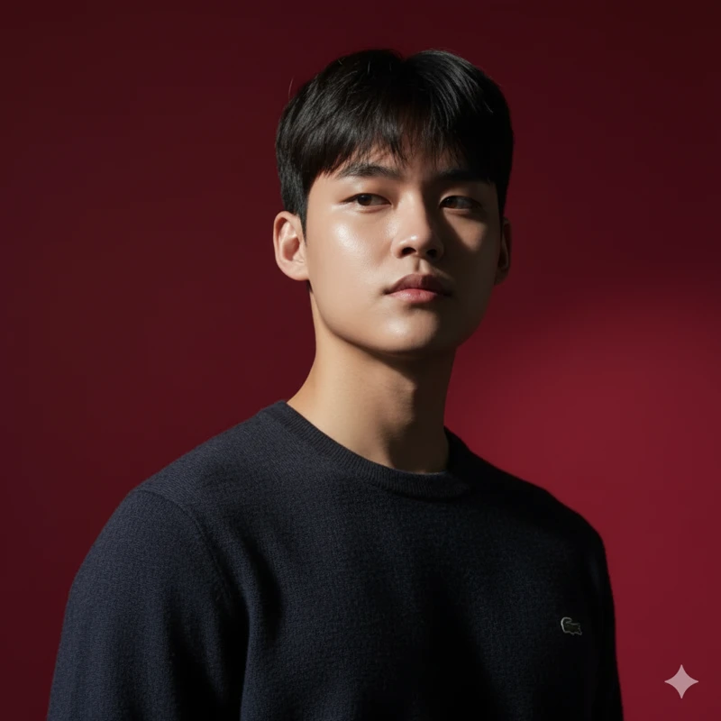

2026.04 — 2026.09
프리랜서 Python · AI/AX 교육
중랑구·용산구 여성인력개발센터
경력단절여성을 대상으로 Python과 데이터 분석을 가르치고, SQL·n8n 자동화와 AI 업무 활용 교육을 진행했습니다. 설명과 실습 자료를 제작하고 학습자의 질문을 수업 구성에 반영했습니다.
AI BUILDER · EDUCATION
프론트엔드 개발자로 시작해 AI 교육·컨설팅과
교육 사업의 기획·운영을 맡아온 오정협입니다.
고객이 만들고 싶은 것을 이해하고,
직접 실행할 수 있는 과정으로 구체화합니다.

기획부터 구현·배포 지원까지
개념을 설명과 실습으로
누적 멘토링 200시간 이상사업 기획·서비스 제작 / 본인 집계
SELECTED WORK / 01—04
어떤 문제를 만났고,
무엇을 직접 했는지 담았습니다.
데이터를 고르고,
정렬하고, 설명하기.
Python 교안의 설명·예제·퀴즈를 직접 만들고, 학습자가 용어에 막히는 지점을 수업 순서의 개선으로 연결했습니다.

AI 서비스 제작 교육의 기획·판매·운영을 맡고, 고객의 사업아이템 탐색을 돕는 랜딩페이지와 n8n 흐름을 만들었습니다.
고객이 만들고 싶은 것에서
함께 시작합니다.
의사·변호사·사업가 등 비개발자 대표에게 1:1 교육과 컨설팅을 제공하며 서비스 기획부터 제작·배포를 지원했습니다.
답을 부탁하기 전에,
내 가설부터 검토하기.
비개발자 독자를 대상으로 제작 방향을 정하고, ChatGPT·Codex와 협업해 읽고 적용하는 웹 콘텐츠를 만들었습니다.
2026.04 — 2026.09
중랑구·용산구 여성인력개발센터
경력단절여성을 대상으로 Python과 데이터 분석을 가르치고, SQL·n8n 자동화와 AI 업무 활용 교육을 진행했습니다. 설명과 실습 자료를 제작하고 학습자의 질문을 수업 구성에 반영했습니다.
2025.06 — 2026.04
외주개발팀 · AX 교육컨설팅팀
프론트엔드 개발자로 합류해 고객 서비스 제작과 프로젝트 진행을 지원했습니다. 이후 1:1 AI 교육·컨설팅과 교육 사업의 기획·판매·운영으로 역할을 넓혔습니다.
AI 웹·앱 서비스 제작·수익화 교육 사업 운영
비개발자 대표 대상 1:1 교육·컨설팅과 제작 지원
TEACHING & MENTORING
교육생이 만든 서비스와
제가 지원한 범위를 소개합니다.
사업개발캠프 주강사·멘토 / AI 리더캠프 보조강사
참여자의 사업 도메인과 니즈를 이해하고, 사업 구조와 서비스 제작 방향을 함께 정리했습니다.
AI 앱 제작 온라인 강의 제작 참여
바이브코딩으로 앱을 기획·디자인·제작·배포하는 강의의 제작·촬영·납품에 참여했습니다.
AI 이미지·영상 생성 서비스 · 메인 화면 섹션과 결제 기능 설계 멘토링
해외 사용자를 위한 미술 체험 안내 · UI 참고 조사와 화면 기획·디자인 지원
뉴스 기반 콘텐츠 제작 · 구독 데이터 수집과 관리 방식 멘토링
산재지정 의료기관 탐색 · 지도 기능 구현과 데이터 배치 멘토링
여러 교육·컨설팅 과정에서 지원한 사례입니다. 서비스의 제작·운영 주체는 각 교육생입니다.
TOOLS IN CONTEXT
RESUME
경력과 관련 활동을 한 문서로 정리했습니다.
LET’S CONNECT
AI 교육 콘텐츠, 서비스 기획·제작과 관련한 이야기를 기다립니다.
GitHub